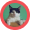
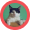

324 amigos na sua cidade
Leve
a felicidade
para o seu lar
Encontre o animal de estimação ideal
para seu estilo de vida!

Um app não,
uma caixinha de amigos...
O FindAFriend é um produto desenvolvido para você encontrar o animal de estimação ideal ao seu estilo de vida!
ONGs cadastram os bichinhos disponíveis para adoção informando características como: porte, nível de energia, nível de independência, sociabilidade e gênero.
Filtre os bichinhos de acordo com suas preferências e lifestyle. Depois é só entrar em contato com a ONG para agendar uma visita e conhecer pessoalmente seu match perfeito!

Há muitos amigos esperando por você!
O FiendAFriend conecta pessoas que estão procurando por um animal de estimação com animais que precisam de um lar amoroso. É fácil de usar e você pode navegar por uma variedade de animais para encontrar aquele que melhor se adapta ao seu estilo de vida e necessidades.
 Hamilton
Hamilton
 Cleiton
Cleiton
 Aldo
Aldo
Sobre a FindAFriend
A FindAFriend acredita que todo bichinho merece uma vida confortável e segura. Por isso, cria soluções que ajudam ONGs e entidades protetoras a conectar pessoas adotantes e animais resgatados.